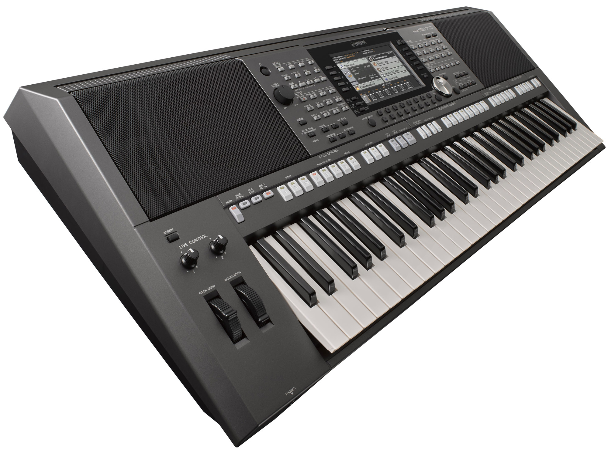

Yamaha PSR S970 Overview
The PSR S970, which was launched in 2016, is the top-of-the-line model in the Yamaha PSR S series. It offers all the functionality of the other models in the range while also incorporating powerful performance features. Here are some key details about this model :
Sound Technology : The PSR-S970 inherits powerful sound and rhythm technology from the legendary Tyros 5. It features 989 voices, including Super Articulation Voices and Organ Flutes, as well as 41 Drum/SFX kits and 480 XG voices.
Live Control : A specific feature of the 70 series that allows you to manipulate various parameters in real time. It offers dynamic musical performance and lets you assign various different function on a single click.
Styles and Accompagniments : 450 built-in styles, covering a wide range of musical genres. These styles provide automatic accompaniment, allowing you to create full arrangements with just a few button presses.
Audio Recording and Playback : You can record and play back audio directly on this keyboard model. The editing features include time stretch, pitch shift, and vocal cancel, making it a versatile tool for music production.
Multi Pads and Audio Link Like all models in the S-series, multi pads is here to enhance your performances by adding additional sounds, loops, and effects. With the Audio Link feature, you can trigger audio samples directly from the pads.
VCM Effects The PSR-S970 includes Virtual Circuitry Modeling (VCM) effects with a graphical interface. These effects provide high-quality processing for your sounds, giving you more creative options.
External Display You can connect an external display to the PSR-S970, which enhances your workflow by providing additional visual feedback and control.
Vocal Harmony
The PSR-S970 allows you to create harmonies automatically based on your vocal input. You can customize the harmony settings to suit your performance style.
For the full specifications, you can see the manufacturer website here.
The PSR-S970 truly stands out as a versatile and powerful arranger workstation, perfect for musicians and performers who demand top-notch features and sound quality. Whether you’re a professional musician or an enthusiastic hobbyist, this keyboard won’t disappoint!